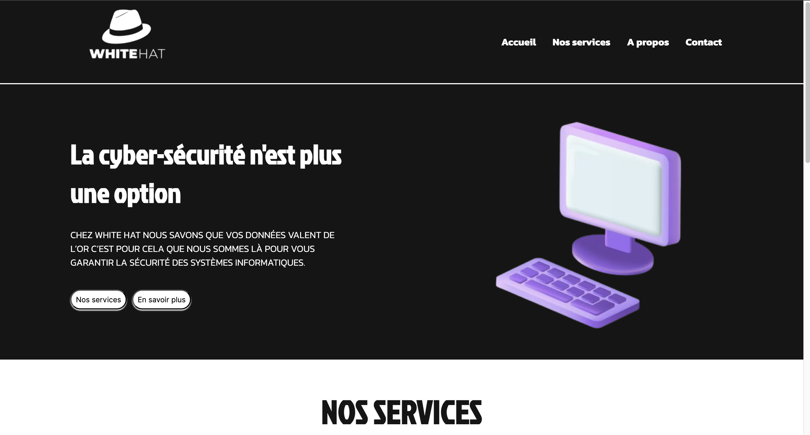
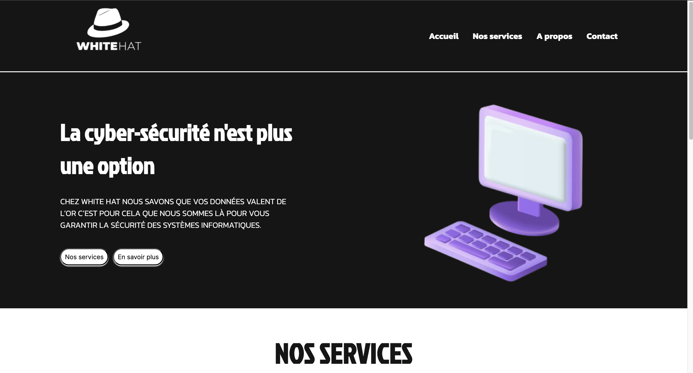
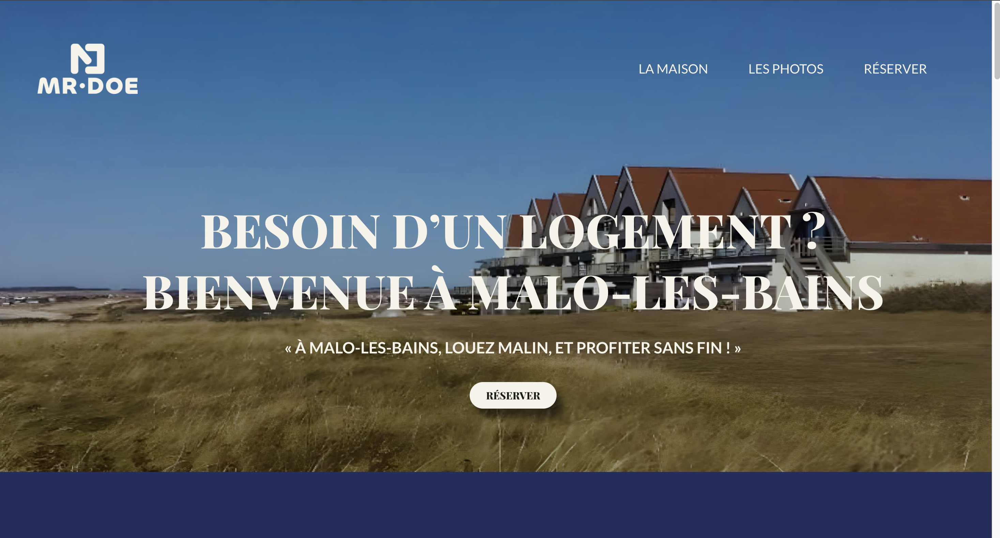
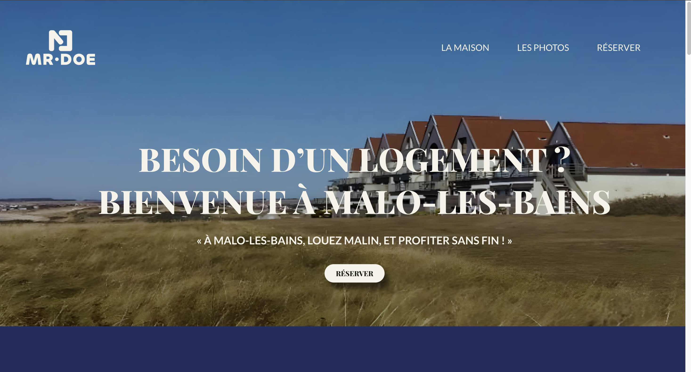

Cela fait deux ans que je suis à MyDigitalSchool et depuis j’ai pu mettre en pratique mes compétences en développement web. Voici deux projets de développement web que j’ai pu réaliser :
 

Dans le cadre du module « Intégration Web », je devais réaliser avec les membres de mon groupe un site vitrine en HTML/CSS. Le sujet pour le contenu du site était libre et nous avons choisi de parler des White Hat, une organisation de hackers éthiques. Nous devions réaliser ce site dans le but de pratiquer les bases du HTML/CSS tels que : l’utilisation des balises sémantiques, les classes, les id, styliser son contenu, l’indentation du code , la navigation entre différentes pages, le responsive, l’utilisation de GitHub. Nous avons organisé notre projet pour travailler dans un premier temps sur le design du site (couleurs, typographie, textes, images). Nous avons pu ensuite réaliser une maquette afin de savoir parfaitement où placer notre contenu. Enfin nous avons tous développé une page. Je me suis occupé personnellement d’intégrer les parties les plus dures du code car j’étais celui qui était le plus à l’aise avec le code. J’étais chargé également d’envoyer l’avancement du projet sur GitHub. Vous pouvez retrouver le github de notre projet juste ici :
 

Lors du module « Conception Wordpress », je devais une nouvelle fois réaliser un site vitrine en groupe. Comme le nom du module l’indique, je devais cette fois ci utiliser Wordpress pour développer ma page. Nous devions réaliser un site vitrine pour « Mr Doe » qui souhaitait mettre en location son logement en bord de mer. Ce site était un one page et devait contenir toutes les informations nécessaires pour que les potentiels clients aient les informations sur le logement et puissent réserver leur séjour. Ce projet avait pour but de nous familiariser avec Wordpress pour connaitre une autre façon de développer un site internet. Nous avons appris de ce fait à : lancer et configurer un projet Wordpress, utiliser un thème et des extensions, créer et gérer différentes pages, développer son site avec Elementor ou Gutenberg qui sont des extensions pour personnaliser son contenu. Nous avons réalisé une nouvelle fois une réflexion pour le design du site, ensuite une maquette et enfin nous avons procédé au développement. A la fin de ma première année, j’ai réalisé un stage chez IESI qui est une société de services informatiques. Durant celui-ci j’ai pu travailler sur deux gros projets de développement web qui contenaient une partie front et une partie back et ils allaient être réutilisés plus tard par l’entreprise.

A la fin de ma première année, j’ai réalisé un stage chez IESI qui est une société de services informatiques. Durant celui-ci j’ai pu travailler sur deux gros projets de développement web qui contenaient une partie front et une partie back et ils allaient être réutilisés plus tard par l’entreprise:
Pour ce second projet, je devais développer dans un premier temps une sonde qui relève au même moment la ram et le stockage d’une machine puis dans un second temps une interface où les informations y allaient être affichées. La sonde allait être implantée sur des ordinateurs et le visuel allait être conservé. En effet, toutes les minutes, la sonde va être lancée sur la machine sur laquelle elle se trouve et va envoyer à chaque fois deux alertes à l’interface : une pour la ram et une pour le stockage. Chaque alerte comportera les données suivantes : nom de la machine, le type de l’alerte (soit ram ou stockage), la date et l’heure, la valeur de la ram ou du stockage exprimée en % , le restant, en % (indique la valeur restante avant que la ram ou le stockage atteigne le 100%), le seuil définit en % (que la ram ou le stockage ne doivent normalement pas dépasser ou de très peu) , le statut indique si la valeur de l’alerte a dépassé le seuil. Ce projet a tout aussi été captivant car il m’a permis de travailler avec Python pour développer la sonde mais de réutiliser les frameworks Angular et Nest Js et l’API.
Mon premier projet consistait à développer une interface qui devait permettre au personnel d’IESI de consulter des « tickets » envoyés par ses clients. Les tickets permettent aux clients d’IESI d’exprimer leurs problèmes informatiques et ils sont envoyés grâce à une plateforme nommée « Apollo » (développé par IESI). Mon interface allait être relié à cette plateforme pour qu’elle reçoit à chaque fois les nouveaux tickets. Un ticket comprend plusieurs informations comme le nom de l’interlocuteur, le nom de la société, le numéro de téléphone, l’adresse mail, le résumé du problème. Ce projet m’a fait travailler un peu plus en détails sur la programmation orientée objet et surtout sur le framework Angular pour la partie front et sur le framework NestJS pour la partie back. J’ai également appris à manipuler une API qui permet d’interconnecter différentes parties d’un projet web. La complexité du projet m’a vraiment fait progresser en développement web car je m’efforçais à comprendre les notions difficiles. Ma capacité à travailler en équipe a été sollicité car je devais travailler avec un autre stagiaire sur ce projet.